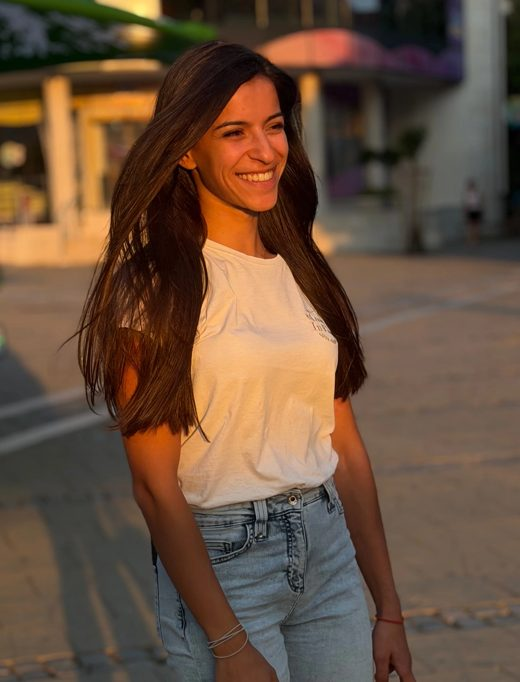
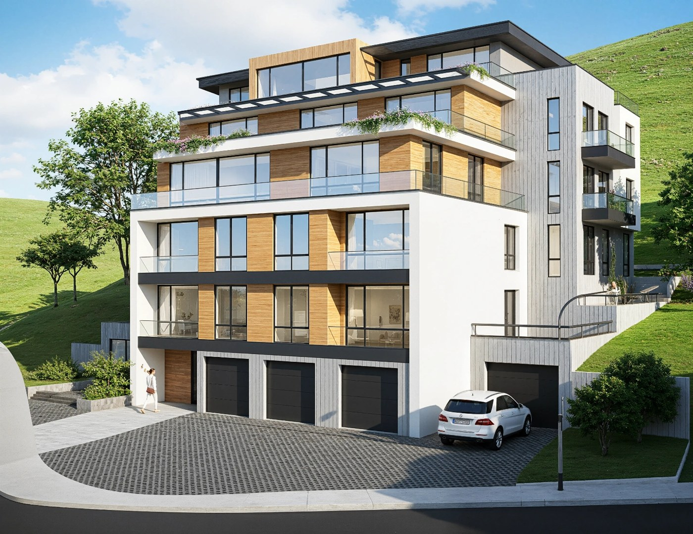
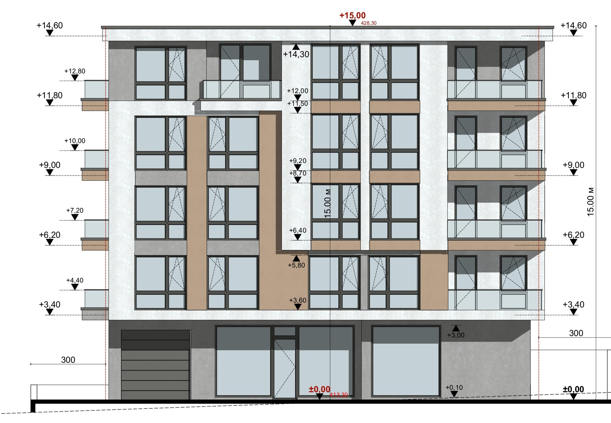
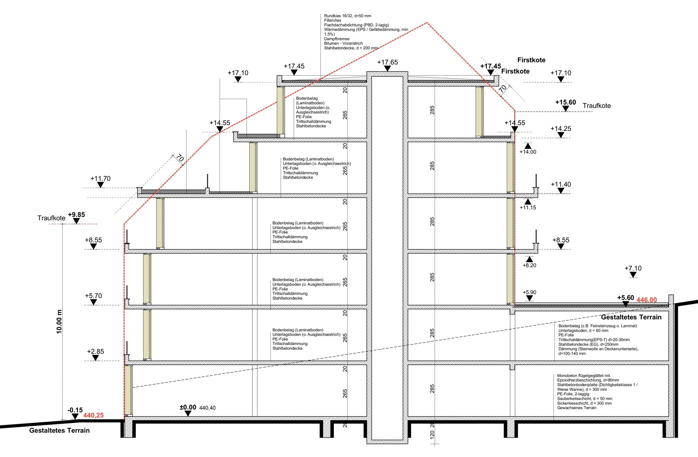
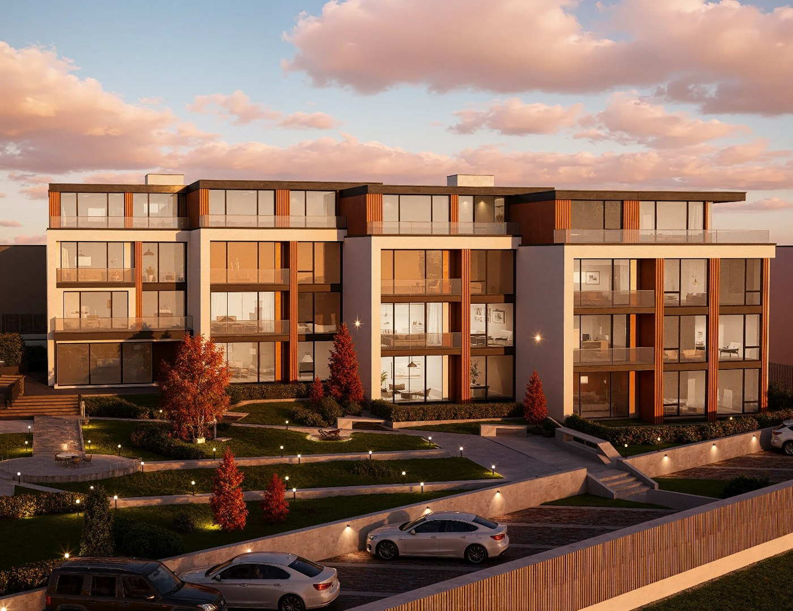
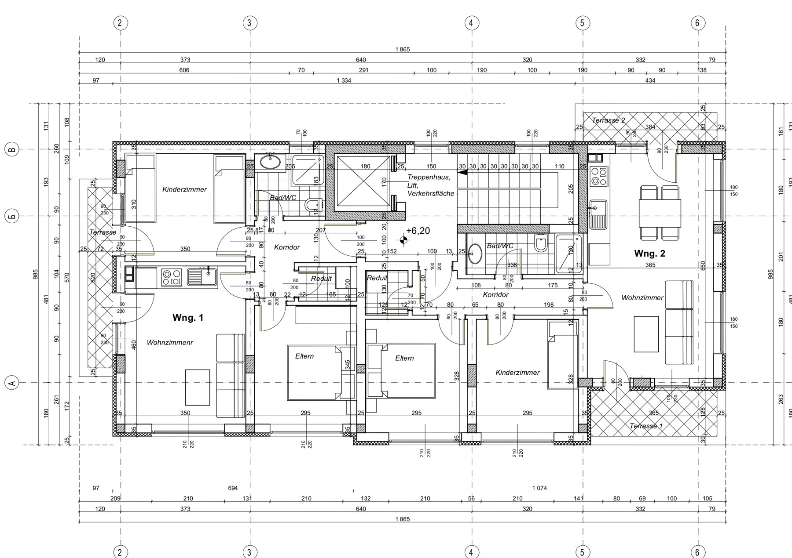
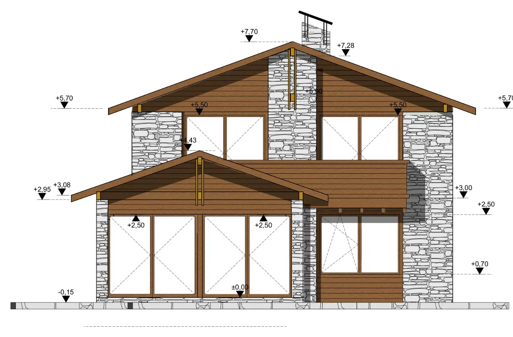

Architektin · Ausführungsplanung · Archicad · BIM/IFC · Wohnungsbau
k.prodanichina@gmail.com · +359 878 63 50 60 · Portfolio: archikprojekt.com · linkedin.com/in/kristiyana-prodanichina
Remote aus Bansko (BG), Termine vor Ort nach Absprache · Deutsch B2 · Englisch B2 · EU-Bürgerin

70.000 m²BGF Wohnungsbau geplant
8Wohnprojekte bis zur Ausführungsplanung
16.000 m²größtes Einzelprojekt
3Einfamilienhäuser gebaut
Architektin mit Schwerpunkt Ausführungsplanung im Wohnungsbau: jeder Plan aus dem Archicad-Modell abgeleitet, vom Vorentwurf bis zum Detail – und mit der Sicht von der Baustelle. Was ein Büro sonst über Monate aufbauen muss – Archicad-Workflow, Planableitung aus dem Modell, Abstimmung zwischen Plan und Baustelle – bringe ich am ersten Tag mit.
10/2025 – heute
02/2026 – heute
08/2022 – 12/2023



Kristiyana Prodanichina · Lebenslauf · Seite 1 von 2
07/2021 – 08/2022
2024 – 2025
UACEG – Universität für Architektur, Bauingenieurwesen und Geodäsie, Sofia
Kammer der Architekten in Bulgarien – Berufsqualifikation innerhalb der EU erworben



Alle Pläne &
Projekte online
E-Mail
k.prodanichina@gmail.com
Telefon
+359 878 63 50 60
Portfolio
archikprojekt.com
LinkedIn
kristiyana-prodanichina
Kristiyana Prodanichina · Lebenslauf · Seite 2 von 2